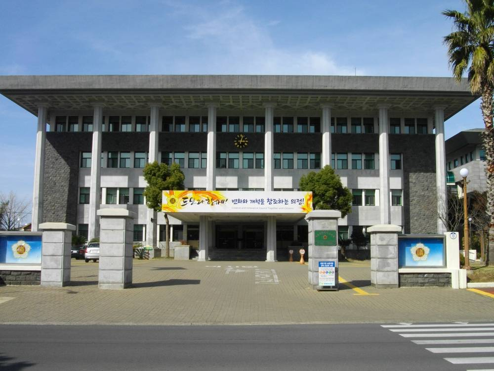

제주 공약실천계획 해상풍력 5GW 두고 도의회 질의…기본소득 로드맵 공개 요구

김기환 위원장 기본소득 로드맵 요구 / 도 5GW 12차 전력수급기본계획 반영 추진
제주도의회가 11월 13일 제456회 제2차 정례회 본회의 도정질문에서 공약실천계획의 해상풍력 목표와 에너지 기본소득을 따졌다. 김기환 미래경제산업위원장은 위성곤 지사의 선거 공약인 100조 원 투자, 해상풍력 10GW, 연 1조 원 기본소득이 10월 확정된 계획에서 빠졌다고 지적했다. 계획에는 해상풍력 5GW만 남았고, 정부 제12차 전력수급기본계획 반영을 건의하는 수준에 그쳤다는 것이다.
김 위원장은 제주 내부 전력망의 추가 수용 용량이 최대 1GW이고 육지 송전망 접속도 불확실하다며, 공약을 폐기한 것인지 장기 과제로 미룬 것인지 밝히라고 요구했다. 일부 주민이 출자해 배당받는 방식은 도민 전체가 나누는 개발이익 공유화기금(풍력사업자의 이익공유금으로 만드는 기금)과 다르다고도 짚었다. 17명으로 꾸린 해상풍력 추진지원단에 어업인과 해상경계 지역 주민이 참여하는지 묻고, 기본소득이 어렵다면 시행 시기·조건·1인당 지급액을 담은 로드맵이라도 내라고 했다.
위 지사의 본회의 답변은 본지가 확인하지 못했으며, 도는 앞서 10월 7일 민선 9기 출범 100일 기자회견에서 제주권역 5GW 해상풍력 개발계획을 제12차 전력수급기본계획에 반영하겠다고 밝혔다.
뉴스 바로 읽기
본지가 공개 자료와 본지 보도로 확인한 사실만 덧붙입니다
10월 7일 기자회견문에는 「제주 풍력발전 조례」를 전면 개정해 개발이익 공유를 바탕으로 주민참여를 넓힐 기반을 마련했다는 내용도 있다. 본지는 11월 12일 제주 해상풍력 5GW 도정질문에서 추자 해상풍력 전력의 전송 경로를 두고 나온 질의를 전했다. 당시 위 지사는 해남·진도로 바로 잇는 방식은 약 50km이고, 150km를 돌아가는 방식은 정부가 부정적이라고 답했다.
출처: 뉴스다 2026-11-13 김영미 원문 보기
출처: 제주특별자치도 2026-10-07 민선 9기 출범 100일 기자회견문(전문, 제주의소리 게재) 원문 보기